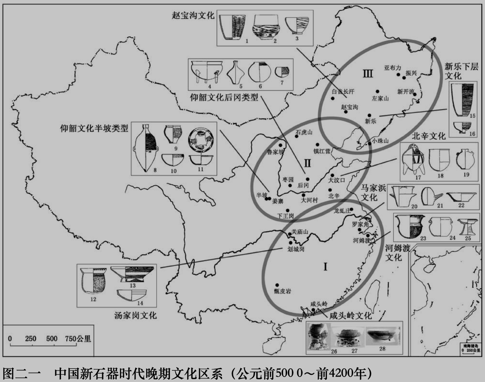

1): 18000-7000 BC

2): 6200-5500 BC
3): 5000-4200 BC

4): 4200-1300 BC
| Cultural Spheres Merge Process | |
|
1): 18000-7000 BC |
2): 6200-5500 BC |
|

3): 5000-4200 BC |
4): 4200-1300 BC |
| (Han Jian-Ye 2019) | |